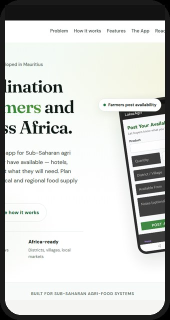
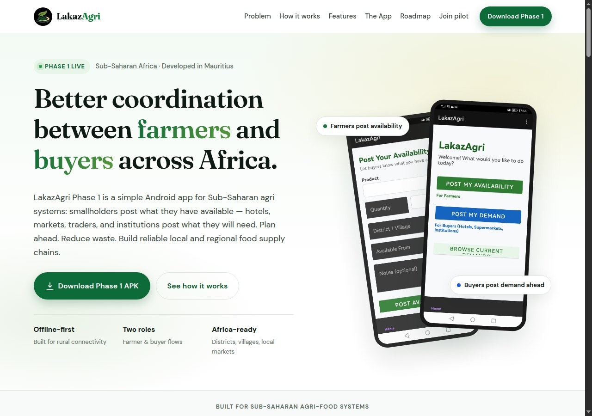
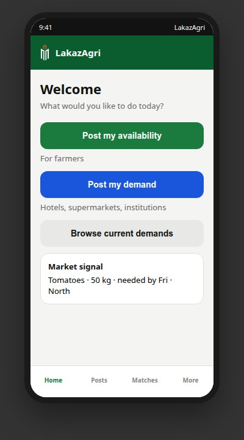

Blind planting
Farmers produce without advance signals from hotels, institutions, or retailers — leading to surplus or the wrong mix of crops.
LakazAgri Phase 1 is a simple Android app that lets smallholder farmers post what they have available — and lets hotels, supermarkets, and institutions post what they will need. Plan ahead. Reduce waste. Build reliable local supply chains.


Built for Mauritius’ local food system
Across Mauritius and similar markets, smallholders often plant without clear visibility of what buyers will need. Hotels and supermarkets struggle with inconsistent supply. The result is waste, unstable incomes, and missed opportunities for local food.
Farmers produce without advance signals from hotels, institutions, or retailers — leading to surplus or the wrong mix of crops.
Buyers face last-minute shortages, variable quality, and heavy reliance on intermediaries with little planning data.
There is limited coordination between production and market demand — and almost no aggregated data for local planning.
Phase 1 focuses on the foundation: register as a farmer or buyer, post availability or demand, and browse what the market needs — all on a mobile-first, offline-capable Android app.
Open LakazAgri and select I am a Farmer or I am a Buyer. You can change roles later in settings.
Register with full name, phone number, district/village, and optional organisation or farm name. Privacy-first by design.
Farmers share crop, quantity, location, and date available. Buyers post product needed, quantity, deadline, and preferred district.
See current market demand, align planting and procurement, and reduce the guesswork that creates waste and empty shelves.

Designed for phones farmers and buyers already use — install the Phase 1 APK and start in minutes.
Dedicated farmer and buyer paths so each user only sees what they need to act on today.
Districts, villages, and Mauritian phone formats baked into registration and posting flows.
Supports existing trusted links between growers, coops, and buyers — does not force anonymous marketplace trading.
From role selection to posting and browsing, the foundation is built and tested for early users.


Phase 1 does not try to replace every intermediary or certify every crate. It solves the first bottleneck: visibility. When buyers say what they need and farmers show what they have, both sides can plan — and Mauritius’ local food brand gets stronger.
We are shipping deliberately: prove coordination first, then add matching, transparency, and verified trust.
Download the pilot APK, register as a farmer or buyer, and start posting. Ideal for early testers, cooperatives, hotels, and programme partners who want to trial coordination in the field.
Android · Phase 1 v1.0 · Install from unknown sources may be required for pilot builds
We are inviting small groups of growers, cooperatives, and buyers to try LakazAgri Phase 1 in real conditions. Tell us who you are and how you’d like to get involved — we’ll follow up with next steps.
Prefer email or WhatsApp?